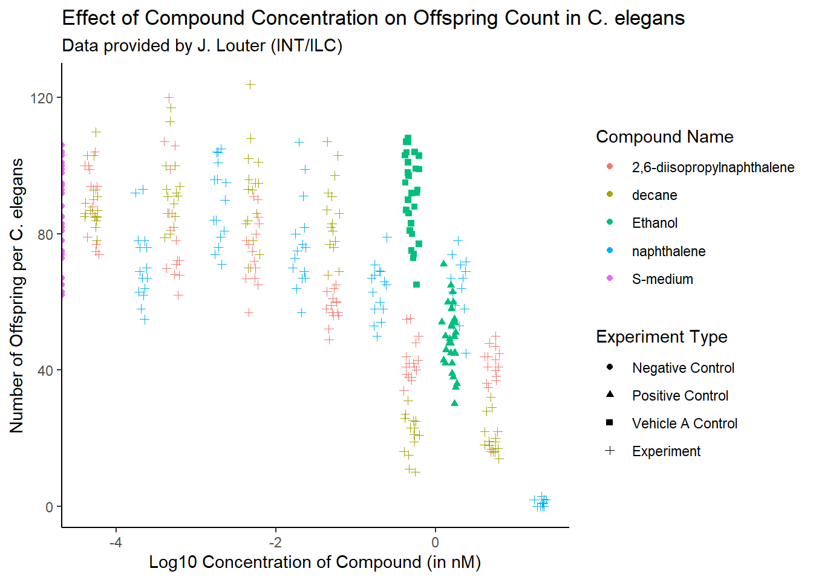

C. elegans Plate Experiment
Introduction
The data presented in this document was kindly provided by J. Louter (INT/ILC) and stems from an experiment that investigated the effect of various compounds on C. elegans nematodes. In this experiment, adult C. elegans were exposed to different concentrations of compounds, and the number of offspring produced by each nematode was counted. The key variables in this dataset include:
- RawData: The number of offspring counted (the outcome).
- compName: The name of the compound or chemical used in the experiment.
- compConcentration: The concentration of the compound (in nM).
- expType: The type of experimental condition (e.g., positive control, negative control, vehicle A control, experiment).
Set up
##
## Attaching package: 'dplyr'## The following objects are masked from 'package:stats':
##
## filter, lag## The following objects are masked from 'package:base':
##
## intersect, setdiff, setequal, union## Loading required package: MASS##
## Attaching package: 'MASS'## The following object is masked from 'package:dplyr':
##
## select##
## 'drc' has been loaded.## Please cite R and 'drc' if used for a publication,## for references type 'citation()' and 'citation('drc')'.##
## Attaching package: 'drc'## The following objects are masked from 'package:stats':
##
## gaussian, getInitialImporting the data
The first step is to import the data from the provided Excel file, which contains the results of the experiment.
Inspecting the data types
Next, we inspect the structure of the data to ensure it has been imported correctly. We also check for the data types of key columns.
## [1] "numeric"## [1] "character"## [1] "character"## [1] "character"# Check if data is correctly imported.
plate_experiment_data %>%
dplyr::select(RawData, compName, compConcentration, expType) ## # A tibble: 360 × 4
## RawData compName compConcentration expType
## <dbl> <chr> <chr> <chr>
## 1 44 2,6-diisopropylnaphthalene 4.99 experiment
## 2 37 2,6-diisopropylnaphthalene 4.99 experiment
## 3 45 2,6-diisopropylnaphthalene 4.99 experiment
## 4 47 2,6-diisopropylnaphthalene 4.99 experiment
## 5 41 2,6-diisopropylnaphthalene 4.99 experiment
## 6 35 2,6-diisopropylnaphthalene 4.99 experiment
## 7 41 2,6-diisopropylnaphthalene 4.99 experiment
## 8 36 2,6-diisopropylnaphthalene 4.99 experiment
## 9 40 2,6-diisopropylnaphthalene 4.99 experiment
## 10 38 2,6-diisopropylnaphthalene 4.99 experiment
## # ℹ 350 more rowsplate_experiment_tidydata <- plate_experiment_data
plate_experiment_tidydata$compConcentration <-
as.numeric(plate_experiment_tidydata$compConcentration)## Warning: NAs introduced by coercionThere is a small issue with the compConcentration column where a comma (,) was mistakenly used instead of a period (.), resulting in NA values. We correct this by replacing the comma with a period and ensuring all values are numeric.
# Locate the NA value in the compConcentration column.
character_placement <- which(is.na(plate_experiment_tidydata$compConcentration))
# Convert the character value to numeric, handling commas.
character_value <- plate_experiment_data$compConcentration[character_placement] %>%
str_replace(",", ".") %>% parse_number()
# Update the compConcentration column
plate_experiment_tidydata$compConcentration[character_placement] <- character_value
# Check the class of compConcentration after conversion.
print(class(plate_experiment_tidydata$compConcentration))## [1] "numeric"## [1] 0Scatterplot of C. elegans plate experiment
To visualize the effect of compound concentration on offspring count, a scatterplot was created. The x-axis represents the log-transformed concentration of the compound (in nM), and the y-axis represents the raw number of offspring. The points are color-coded by the compound name and shaped by the experimental condition type.
plate_experiment_tidydata %>% ggplot(aes(x = log10(compConcentration), y = RawData,
color = compName, shape = expType)) +
geom_jitter(width = 0.1, height = 0.1) +
labs(x = "Log10 Concentration of Compound (in nM)",
y = "Number of Offspring per C. elegans",
color = "Compound Name", shape = "Experiment Type",
title = "Effect of Compound Concentration on Offspring Count in C. elegans",
subtitle = "Data provided by J. Louter (INT/ILC)") +
scale_shape_discrete(labels = c("Negative Control", "Positive Control",
"Vehicle A Control", "Experiment")) +
theme_classic()## Warning: Removed 5 rows containing missing values or values outside the scale range
## (`geom_point()`).
Figuur 1. Scatterplot showing the effect of compound concentration on offspring count in C. elegans across different experimental conditions.
The positive control of this experiment is “Ethanol”. The negative control of this experiment is “No treatment”.
Normalizing the data for the negative control
To facilitate comparison across experimental conditions, we normalize the raw offspring counts relative to the negative control group (“S-medium”). This adjustment accounts for baseline variability and enables more accurate comparisons between experimental conditions.
# Compute the mean for the negative control group "S-medium".
mean_controlNegative <- mean(plate_experiment_tidydata$RawData
[plate_experiment_tidydata$compName == "S-medium"],
na.rm = TRUE)
# Create RawData_normalized column with the normalized raw data.
plate_experiment_tidydata$RawData_normalized <-
plate_experiment_tidydata$RawData / mean_controlNegative
# Compute the mean of the normalized data for the negative control group.
mean(plate_experiment_tidydata$RawData
[plate_experiment_tidydata$compName == "S-medium"], na.rm = TRUE)## [1] 85.9Scatterplot of C. elegans plate experiment with normalized data
With the data normalized, we can generate another scatterplot to visualize the relationship between compound concentration and offspring count. This time, the y-axis reflects the normalized number of offspring.
plate_experiment_tidydata %>% ggplot(aes(x = log10(compConcentration),
y = RawData_normalized,
color = compName, shape = expType)) +
geom_jitter(width = 0.1, height = 0.1) +
labs(x = "Log10 Concentration of Compound (in nM)",
y = "Normalized Number of Offspring per C. elegans",
color = "Compound Name", shape = "Experiment Type",
title = "Effect of Compound Concentration on Offspring Count in C. elegans",
subtitle = "Data provided by J. Louter (INT/ILC)") +
scale_shape_discrete(labels = c("Negative Control", "Positive Control",
"Vehicle A Control", "Experiment")) +
theme_classic()## Warning: Removed 5 rows containing missing values or values outside the scale range
## (`geom_point()`).
Figuur 2. Scatterplot of the effect of compound concentration on normalized offspring count in C. elegans.
The normalization process makes it easier to compare the effects of different compounds, accounting for baseline differences in offspring count.